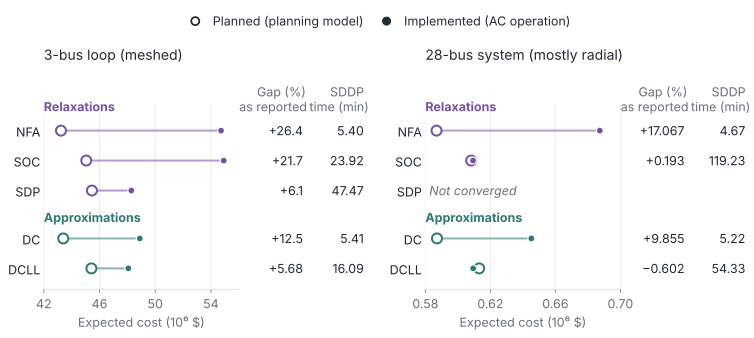

01 · Two modelsA plan is judged where it is realized
Planning with a simplified model must be assessed through the decisions implemented on the system it represents. Consider a multistage problem with state \(\mathbf x_t\), recourse \(\mathbf y_t\), and uncertainty \(w_t\), and two descriptions of the same stage: a planning model with feasible recourse set \(\mathcal Y_t^{\mathrm{plan}}\), chosen because a planning method can handle it, and an operating model \(\mathcal Y_t^{\mathrm{op}}\), which determines what can be implemented. Given a continuation-value approximation \(\widehat{\mathcal V}_{t+1}\), either model selects a stage decision by solving
Here \(f\) is the stage cost, \(T\) is the horizon, and \((\mathbf x_t^{m},\mathbf y_t^{m})\) is a selected minimizing pair under model \(m\). Rolling these decisions forward from a fixed initial state \(\mathbf x_0\) gives a trajectory with expected cost
Here \(\mathbf w=(w_1,\ldots,w_T)\) is the uncertainty path, \(\mathbb P\) is its law, and \(J^{\mathrm{plan}}\) and \(J^{\mathrm{op}}\) are respectively the planner's expected cost and the system's incurred expected cost under that same law. The difference between \(J^{\mathrm{op}}\) and \(J^{\mathrm{plan}}\), reported by Rosemberg et al., 2022 in percent of the planned cost, is the inconsistency gap of Brigatto et al., 2017, the operator's regret with respect to its planning expectation. The gap measures how optimistic the planning model was. The implemented cost \(J^{\mathrm{op}}\) is what ranks competing planning models, and it is the criterion used here.
The following case study considers long-horizon storage planning: Stochastic dual dynamic programming (SDDP) computes the value of stored water over years (Pereira and Pinto, 1991) and requires convex stages, while the operated network obeys nonconvex AC power flow, so planning uses a convex or linear network model and dispatch a more detailed one, as in the planning chain of the Brazilian system (Maceira et al., 2018).
02 · Value transmissionThe planning model reaches every stage through its cuts
SDDP represents the continuation value by cuts, \(\widehat{\mathcal V}_{t+1}(\mathbf x_t)=\max_k\{\alpha_k+\boldsymbol\beta_k^\top\mathbf x_t\}\). Each cut is computed from the optimal values and state multipliers of next-stage problems solved on \(\mathcal Y_{t+1}^{\mathrm{plan}}\). Multipliers are signed as sensitivities of the optimal value to the incoming state fixed on the right-hand side, and \(\boldsymbol\beta_k\) is their probability-weighted average at the cut's reference state. For stored water, its negative is the marginal value of retaining it. When the cuts are used in operation, the planning model does not constrain any implemented dispatch. In the assessment of Rosemberg et al., 2022, the only result of the planning stage used in operation is the cost-to-go approximation. The network model therefore acts on the operated system only through the value it assigns to stored water.

Where the cuts are fitted matters as much as the model they are fitted on. In the rolling practice, cuts computed with planning-model forward and backward passes are embedded in the detailed stage problem and never revised at the states that detailed operation reaches, which makes the implemented policy time-inconsistent (Brigatto et al., 2017). The assessment above instead runs the forward pass under the operating model, so the cuts are refined at operated states while their values and slopes still come from the planning model. On the ramp-limited 793-bus battery instance of Policies for Multistage Decisions, DC cuts used in the rolling manner operated 25.69% above the best-known AC reference and left 213 MWh unserved, against 4.76% and 36 MWh when the forward pass ran under AC.
The assessment is implemented in HydroPowerModels.jl (Rosemberg et al., 2019), in which the planning and operating formulations are separate arguments of one model: Network formulations come from PowerModels.jl (Coffrin et al., 2018), and SDDP.jl (Dowson and Kapelevich, 2021) trains the cuts with the operating formulation in the forward pass.
03 · Model relationRelaxations and approximations make different promises
The AC model can be written with a lifted matrix \(W=\mathbf v\mathbf v^{*}\) of voltage products, and its nonconvexity sits in this rank-one constraint. The SDP relaxation keeps \(W\succeq0\) and drops the rank (Bai et al., 2008); the SOC relaxation keeps only the \(2\times2\) conditions \(|w_{nm}|^2\le w_{nn}w_{mm}\) on the branches (Jabr, 2006), so that the AC set lies inside the SDP set, which lies inside the SOC set (Low, 2014). The QC relaxation is another member of this family (Coffrin et al., 2016). The transportation model (NFA) keeps line limits and drops Kirchhoff's voltage law. The DC model approximates that law linearly and without losses (Stott et al., 2009), and the DCLL model adds a quadratic approximation of line losses (Coffrin and Van Hentenryck, 2014). In the paper's classification, the inclusions are in the space of dispatch and storage decisions: NFA relaxes every other model, SOC relaxes SDP, and DC relaxes DCLL. They do not assert containment of the lossless and lossy branch-flow variables.

A relaxation contains every detailed operating point. Solved to optimality, it bounds the detailed cost from below, and the cuts it generates are valid outer approximations of the detailed cost-to-go. By the same token they are optimistic: They value water as if the constraints that the relaxation removes could never bind. An approximation has neither property in general, since its feasible set need not contain, or be contained in, the detailed one (Molzahn and Hiskens, 2019). Both relations concern the values computed during planning. Neither concerns the policy those values induce under the operating model.
04 · Value accuracyValue accuracy does not order policies
A continuation value enters a decision only through differences of its values. For a stored quantity at two levels \(x^-\le x^+\), the future benefit of holding more is
Here \(\mathcal V^{m}\) is the continuation cost under model \(m\), and \(B^{m}\) is its benefit from the higher inventory. If retaining the extra quantity costs \(A\) now, the reversal \(B^{\mathrm{plan}}\lt A\lt B^{\mathrm{op}}\) makes release attractive under the planning values when retention is preferable under the operating model. A constant offset cancels from both benefits, so an approximation can be wrong in level and right in every decision, or close in level and wrong in a decision.
Validity does not repair this: Lower approximations that are valid at both levels can still overstate the benefit of holding more. In the same battery study, on the instance without ramp limits, the trained DC cuts lay below the exact DC continuation at all 20 test points, yet at the first stage their difference between two candidate decisions was 11,239 against 7,617 for the exact DC lookahead, for an extra cost of 9,126 now. The cut-based policy therefore stored 45–241 MWh more than the exact DC lookahead in each of the first ten stages, and it performed better under AC. The values farther from the exact DC continuation induced the better operated policy.
A relaxation's error is also not uniform over states. On the 793-bus meshed network of the same study, with storage held at its incoming level, single-hour SOC costs were 3.4–6.6% below AC costs outside a renewable lull and 52–83% below during the regional demand stress that follows it, when the AC system needs emergency service that the larger relaxed set does not. The relaxation was least accurate when stored energy was most valuable, which is when its cuts set the decision.
05 · Induced policiesOperation reorders the planning models
The controlled comparison of Rosemberg et al., 2022 holds every other modeling choice of long-term hydrothermal planning fixed and varies only the network model used to build the cuts: NFA, SOC, SDP, DC, and DCLL. Each policy is operated under AC power flow with the procedure of Section 02 and evaluated on the same 3,000 out-of-sample inflow scenarios. Two systems separate the effect of network topology. The first is a three-bus loop, fully meshed, with one hydro plant and 48 monthly stages. The second is the 28-bus Bolivian system with 11 hydro plants among 34 generators, 31 branches, and only three cycles, over 96 stages.

On the meshed loop, NFA and SOC represent Kirchhoff's voltage law poorly around the cycle. Planning with either drove expected storage to very low levels, and AC operation then required load curtailment and expensive thermal dispatch. The implemented costs were 54.72 and 54.92 million dollars, a difference the paper finds not statistically significant even though SOC is the tighter relaxation. The DC, SDP, and DCLL policies value water accounting for the voltage law and stored significantly more of it, with implemented costs of 48.89, 48.29, and 48.07 million dollars. The tightest relaxation, SDP, did not give the lowest implemented cost. The DCLL approximation did, with the smallest gap (5.68%) and about a third of the SDP time (16.09 against 47.47 minutes).
On the mostly radial system, the SOC policy has a gap of only 0.193%, consistent with the relaxation being nearly tight on radial networks (Jabr, 2006). The DCLL policy had an implemented cost statistically indistinguishable from the SOC policy at the 0.05 level, at less than half its time (54.33 against 119.23 minutes); its gap is −0.602%, so the operated cost came out below the planned one. The SDP run was stopped after four weeks without converging. The DC and NFA policies, with gaps of 9.855% and 17.067%, produced high thermal dispatch and spot-price spikes under AC.
The planned costs respect the inclusions: NFA is lowest and DC is below DCLL in both systems, with SOC below SDP on the meshed loop. The implemented costs do not. SOC, tighter than NFA, gave no improvement on the meshed system, and in each system an approximation matched or improved on the best relaxation policy.
06 · Retained operating modelThe approximation can move into the policy, the value, or the coefficients
Every policy above is induced by cuts computed on a model that the operated system does not obey; choosing among planning models narrows the mismatch without removing it. The approximation can instead be placed where the operating model stays intact. A state policy can be trained against the operating model itself, with SDDP using conic and DC cuts, built as in Section 02, as its benchmark (Policies for Multistage Decisions). A convex continuation value can be learned from samples of the detailed model (Continuation-Value Representations). A tractable model can be retained with coefficients learned from the decisions they induce under the detailed one (Learned Model Correction).
07 · SoftwareSeparate formulations expose the cost of model mismatch
HydroPowerModels.jl takes the planning and the operating network formulation as separate arguments, so any pair of PowerModels formulations can be compared as in Section 05.
HydroPowerModels.jl
Multistage hydrothermal planning by SDDP over any PowerModels network formulation, with one formulation computing the cuts and another operating the system.
References
- X. Bai, H. Wei, K. Fujisawa, Y. Wang. Semidefinite programming for optimal power flow problems. International Journal of Electrical Power & Energy Systems 30(6):383–392, 2008.
- A. Brigatto, A. Street, D. M. Valladão. Assessing the cost of time-inconsistent operation policies in hydrothermal power systems. IEEE Transactions on Power Systems 32(6):4541–4550, 2017.
- C. Coffrin, R. Bent, K. Sundar, Y. Ng, M. Lubin. PowerModels.jl: An open-source framework for exploring power flow formulations. Power Systems Computation Conference, 2018.
- C. Coffrin, H. L. Hijazi, P. Van Hentenryck. The QC relaxation: A theoretical and computational study on optimal power flow. IEEE Transactions on Power Systems 31(4):3008–3018, 2016.
- C. Coffrin, P. Van Hentenryck. A linear-programming approximation of AC power flows. INFORMS Journal on Computing 26(4):718–734, 2014.
- O. Dowson, L. Kapelevich. SDDP.jl: A Julia package for stochastic dual dynamic programming. INFORMS Journal on Computing 33(1):27–33, 2021.
- R. A. Jabr. Radial distribution load flow using conic programming. IEEE Transactions on Power Systems 21(3):1458–1459, 2006.
- S. H. Low. Convex relaxation of optimal power flow, Part I: Formulations and equivalence. IEEE Transactions on Control of Network Systems 1(1):15–27, 2014.
- M. E. P. Maceira, D. D. J. Penna, A. L. Diniz, R. J. Pinto, A. C. G. Melo, C. V. Vasconcellos, C. B. Cruz. Twenty years of application of stochastic dual dynamic programming in official and agent studies in Brazil: Main features and improvements on the NEWAVE model. Power Systems Computation Conference, 2018.
- D. K. Molzahn, I. A. Hiskens. A survey of relaxations and approximations of the power flow equations. Foundations and Trends in Electric Energy Systems 4(1–2):1–221, 2019.
- M. V. F. Pereira, L. M. V. G. Pinto. Multi-stage stochastic optimization applied to energy planning. Mathematical Programming 52:359–375, 1991.
- B. Stott, J. Jardim, O. Alsaç. DC power flow revisited. IEEE Transactions on Power Systems 24(3):1290–1300, 2009.
- A. W. Rosemberg, A. Street, J. Dias Garcia, D. M. Valladão, T. Silva, O. Dowson. Assessing the cost of network simplifications in long-term hydrothermal dispatch planning models. IEEE Transactions on Sustainable Energy 13(1):196–206, 2022.
- A. W. Rosemberg, A. Street, J. Dias Garcia, T. Silva, D. M. Valladão, O. Dowson. HydroPowerModels.jl: A Julia/JuMP package for hydrothermal economic dispatch optimization. Proceedings of the JuliaCon Conferences 1(1):35, 2019.
Publications
Assessing the Cost of Network Simplifications in Long-Term Hydrothermal Dispatch Planning Models
Paper arXiv INFORMS talkBibTeX
@article{rosemberg2021assessing, title = {Assessing the Cost of Network Simplifications in Long-Term Hydrothermal Dispatch Planning Models}, author = {Rosemberg, Andrew W. and Street, Alexandre and Dias Garcia, Joaquim and Vallad{\~a}o, Davi M. and Silva, Thuener and Dowson, Oscar}, journal = {IEEE Transactions on Sustainable Energy}, volume = {13}, number = {1}, pages = {196--206}, year = {2022}, doi = {10.1109/TSTE.2021.3106810} }A Framework for Assessing the Impacts of Network Formulations in the Operation of Hydrothermal Power Systems
Advisor: Alexandre Street; co-advisor: Davi Valladão; committee: Andy Philpott, Arild Helseth, Bruno Fanzeres.
HydroPowerModels.jl: A Julia/JuMP Package for Hydrothermal Economic Dispatch Optimization
Paper Code JuliaCon talkBibTeX
@article{rosemberg2019hydropowermodels, title = {HydroPowerModels.jl: A Julia/JuMP Package for Hydrothermal Economic Dispatch Optimization}, author = {Rosemberg, Andrew and Street, Alexandre and Garcia, Joaquim Dias and Silva, Thuener and Vallad{\~a}o, Davi and Dowson, Oscar}, journal = {JuliaCon Proceedings}, volume = {1}, number = {1}, pages = {35}, year = {2019}, doi = {10.21105/jcon.00035} }